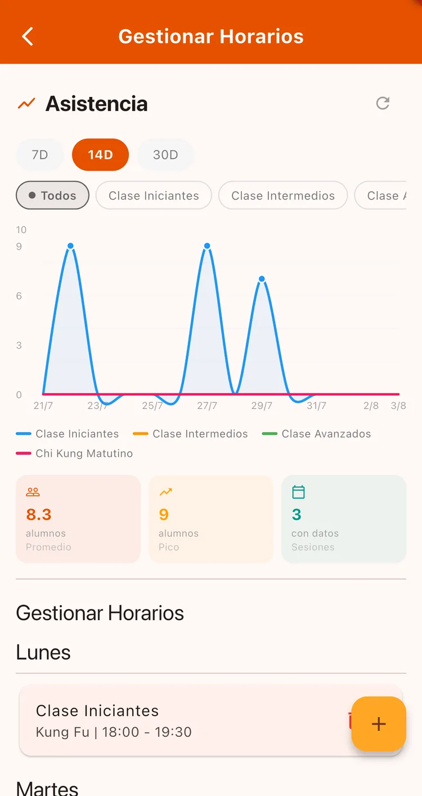
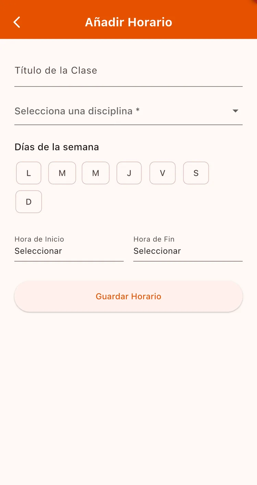
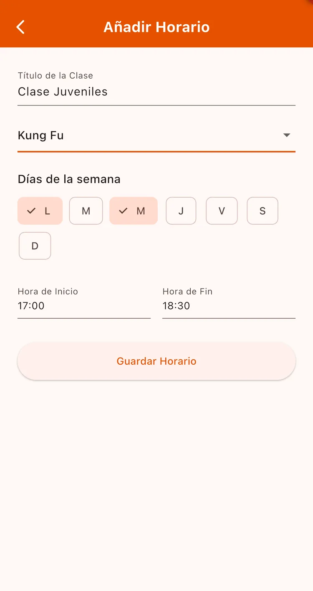

¿Para qué sirve?
Los horarios son la base de la asistencia: cuando vas a pasar lista, la app te muestra las clases de hoy y elegís cuál. Además tus alumnos ven en su pantalla de inicio qué clases hay cada día.
Antes de empezar
- Tener al menos una disciplina creada (si no, la app no te deja crear el horario).
Paso a paso
Abrí la gestión de horarios
Andá a Gestión → Gestionar Horarios. Vas a ver tus clases agrupadas por día de la semana.

Agregá una clase
Tocá el botón + para abrir Añadir Horario.

Completá los datos
Poné el Título de la Clase (por ejemplo «Clase Iniciantes»), elegí la disciplina, marcá todos los días en que se dicta esa clase y definí Hora de Inicio y Hora de Fin.
Tocá Guardar Horario.

Si tu clase de iniciantes es lunes y miércoles, marcá los dos días en el mismo formulario. La app crea automáticamente el horario de cada día.
Por ahora un horario solo se puede crear o borrar. Si te equivocaste en la hora, borralo y creá uno nuevo.